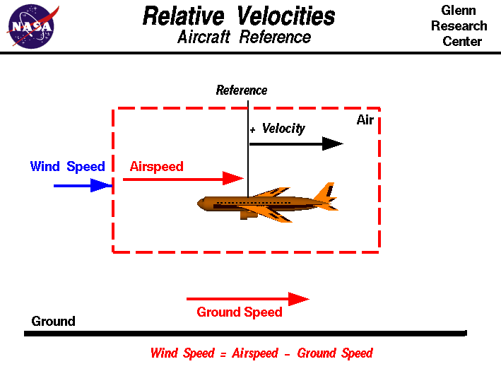

|

One of the most confusing concepts for young aerodynamicists is
the relative velocity between objects.
Aerodynamic forces
are generated by an object moving through the air. Aerodynamic lift, for
instance, depends on the square of the velocity
between the object and the air. Things get confusing because not only
can the object be moved through the air, but the air itself can move.
To properly define the velocity, it is necessary to pick a fixed
reference point and measure velocities relative to the fixed point.
In this slide, the reference point is fixed to the airplane, but it
could just as easily be fixed to the ground.
The important quantity in the generation of lift is the relative
velocity between the object and the air. For a reference point picked
on the aircraft, the air moves relative to the reference point at the
airspeed. The airspeed is a
vector quantity
and has both a magnitude and a direction.
A positive velocity is defined to be
toward the tail of the aircraft. The airspeed can be directly
measured on the aircraft by use of a
pitot tube.
For a reference point picked on the aircraft,
the ground moves aft at
some velocity called the ground speed.
Ground speed is also a
vector quantity
so a comparison with the airspeed must be done according to
the rules of
vector comparisons.
The air in which the aircraft flys can move in all three
directions. In this figure, we are only considering velocities along
the aircraft's flight path and we are neglecting cross
winds which occur perpendicular to the flight path but parallel
to the ground and updrafts and downdrafts
which occur perpendicular to the ground. From the aircraft, we can
not directly measure the wind speed, but must compute the wind speed
from the ground speed and airspeed. Wind speed is the
vector difference
between the airspeed and the ground speed.
Wind speed = Airspeed - Ground Speed
On a perfectly
still day the wind speed is zero and the airspeed is equal to the
ground speed. If the measured airspeed is greater than the observed
ground speed, the wind speed is positive.
Suppose we had an airplane which could take off on a windless day
at 100 mph (lift off airspeed is 100 mph). Now suppose we had a day
in which the wind was blowing 20 mph towards the West. If the
airplane takes off going East, it experiences a 20 mph
headwind (wind in your face). Since a positive velocity is
defined to be toward the tail, a headwind will be a positive wind
speed. While the plane is sitting still on the runway, it has a
ground speed of 0 and an airspeed of 20 mph.
Wind speed (20) = Airspeed (20) - Ground Speed (0)
At lift off, the airspeed is 100
mph, the wind speed is 20 mph and the ground speed will be 80 mph
Wind speed (20) = Airspeed (100) - Ground Speed (80)
If the plane
took off to the West it would have a 20 mph tail wind (wind at
your back). This gives a negative wind speed. At lift off, the
airspeed is still 100 mph, the wind speed is -20 mph and the ground
speed will now be 120 mph.
Wind speed (-20) = Airspeed (100) - Ground Speed (120)
So the aircraft will have to travel faster (and
farther) along the ground to achieve lift off conditions with the
wind at it's back.
Comparing this example with the ground
reference, we see that the magnitudes of all the velocities are
the same, but the sign of the wind speed has changed with the
reference velocity direction. For a ground reference, we chose
a positive wind velocity to be in the same direction as the
aircraft (towards the nose). For an aircraft reference, we
choose a positive wind velocity to be towards the tail.
Activities:


Guided Tours
-
 Into the Wind:
Into the Wind:

Navigation ..


- Beginner's Guide Home Page
|